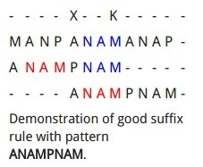

Boyer–Moore string search algorithm
Table of Contents
Overview
The Boyer–Moore string search algorithm1 is a particularly efficient string searching algorithm, and it has been the standard benchmark for the practical string search literature. The Boyer-Moore algorithm was invented by Bob Boyer and J. Strother Moore, and published in the October 1977 issue of the Communications of the ACM , and a copy of that article is available at http://www.cs.utexas.edu/~moore/publications/fstrpos.pdf.
The Boyer-Moore algorithm uses two precomputed tables to give better performance than a naive search. These tables depend on the pattern being searched for, and give the Boyer-Moore algorithm larger a memory footprint and startup costs than a simpler algorithm, but these costs are recovered quickly during the searching process, especially if the pattern is longer than a few elements.
Shift Rules
A shift is calculated by applying two rules: the bad character rule and the good suffix rule. The actual shifting offset is the maximum of the shifts calculated by these rules.
The Bad Character Rule

- comparison failed, two shift
- The next occurrence of that character to the left in P is found: shift to that
- mismatched character does not occur: shift the entirety of P past the point of mismatch
- Preprocessing
create a 2D table which is indexed first by the index of the character c in the alphabet and second by the index i in the pattern
This lookup will return the occurrence of c in P with the next-highest index j<i or -1 if there is no such occurrence.
array[c] return the left occurrence character.
The proposed shift will then be {\displaystyle i-j} i-j, with O(1) lookup time and O(kn) space (a finite alphabet of length k).
The Good Suffix Rule[edit]

change a character into substring
- Preprocessing
The good suffix rule requires two tables: one for use in the general case, and another for use when either the general case returns no meaningful result or a match occurs. These tables will be designated L and H respectively.
For each i, L[i] is the largest position less than n such that string P[i..n] matches a suffix of P[1..L[i]] and such that the character preceding that suffix is not equal to P[i-1]. L[i] is defined to be zero if there is no position satisfying the condition.
Let H[i] denote the length of the largest suffix of P[i..n] that is also a prefix of P, if one exists. If none exists, let H[i] be zero.
Both of these tables are constructible in O(n) time and use O(n) space. The alignment shift for index i in P is given by n-L[i] or n-H[i]. H should only be used if L[i] is zero or a match has been found.
The Galil Rule
As opposed to shifting, the Galil rule deals with speeding up the actual comparisons done at each alignment by skipping sections that are known to match. Suppose that at an alignment k1, P is compared with T down to character c of T. Then if P is shifted to k2 such that its left end is between c and k1, in the next comparison phase a prefix of P must match the substring T[(k2 - n)..k1]. Thus if the comparisons get down to position k1 of T, an occurrence of P can be recorded without explicitly comparing past k1.
Implementations
- In C++, Boost provides the generic Boyer–Moore search implementation
Source codes
- Python
def alphabet_index(c): """ Returns the index of the given character in the English alphabet, counting from 0. """ return ord(c.lower()) - 97 # 'a' is ASCII character 97 def match_length(S, idx1, idx2): """ Returns the length of the match of the substrings of S beginning at idx1 and idx2. """ if idx1 == idx2: return len(S) - idx1 match_count = 0 while idx1 < len(S) and idx2 < len(S) and S[idx1] == S[idx2]: match_count += 1 idx1 += 1 idx2 += 1 return match_count def fundamental_preprocess(S): """ Returns Z, the Fundamental Preprocessing of S. Z[i] is the length of the substring beginning at i which is also a prefix of S. This pre-processing is done in O(n) time, where n is the length of S. """ if len(S) == 0: # Handles case of empty string return [] if len(S) == 1: # Handles case of single-character string return [1] z = [0 for x in S] z[0] = len(S) z[1] = match_length(S, 0, 1) for i in range(2, 1+z[1]): # Optimization from exercise 1-5 z[i] = z[1]-i+1 # Defines lower and upper limits of z-box l = 0 r = 0 for i in range(2+z[1], len(S)): if i <= r: # i falls within existing z-box k = i-l b = z[k] a = r-i+1 if b < a: # b ends within existing z-box z[i] = b else: # b ends at or after the end of the z-box, we need to do an explicit match to the right of the z-box z[i] = a+match_length(S, a, r+1) l = i r = i+z[i]-1 else: # i does not reside within existing z-box z[i] = match_length(S, 0, i) if z[i] > 0: l = i r = i+z[i]-1 return z def bad_character_table(S): """ Generates R for S, which is an array indexed by the position of some character c in the English alphabet. At that index in R is an array of length |S|+1, specifying for each index i in S (plus the index after S) the next location of character c encountered when traversing S from right to left starting at i. This is used for a constant-time lookup for the bad character rule in the Boyer-Moore string search algorithm, although it has a much larger size than non-constant-time solutions. """ if len(S) == 0: return [[] for a in range(26)] R = [[-1] for a in range(26)] alpha = [-1 for a in range(26)] for i, c in enumerate(S): alpha[alphabet_index(c)] = i for j, a in enumerate(alpha): R[j].append(a) return R def good_suffix_table(S): """ Generates L for S, an array used in the implementation of the strong good suffix rule. L[i] = k, the largest position in S such that S[i:] (the suffix of S starting at i) matches a suffix of S[:k] (a substring in S ending at k). Used in Boyer-Moore, L gives an amount to shift P relative to T such that no instances of P in T are skipped and a suffix of P[:L[i]] matches the substring of T matched by a suffix of P in the previous match attempt. Specifically, if the mismatch took place at position i-1 in P, the shift magnitude is given by the equation len(P) - L[i]. In the case that L[i] = -1, the full shift table is used. Since only proper suffixes matter, L[0] = -1. """ L = [-1 for c in S] N = fundamental_preprocess(S[::-1]) # S[::-1] reverses S N.reverse() for j in range(0, len(S)-1): i = len(S) - N[j] if i != len(S): L[i] = j return L def full_shift_table(S): """ Generates F for S, an array used in a special case of the good suffix rule in the Boyer-Moore string search algorithm. F[i] is the length of the longest suffix of S[i:] that is also a prefix of S. In the cases it is used, the shift magnitude of the pattern P relative to the text T is len(P) - F[i] for a mismatch occurring at i-1. """ F = [0 for c in S] Z = fundamental_preprocess(S) longest = 0 for i, zv in enumerate(reversed(Z)): longest = max(zv, longest) if zv == i+1 else longest F[-i-1] = longest return F def string_search(P, T): """ Implementation of the Boyer-Moore string search algorithm. This finds all occurrences of P in T, and incorporates numerous ways of pre-processing the pattern to determine the optimal amount to shift the string and skip comparisons. In practice it runs in O(m) (and even sublinear) time, where m is the length of T. This implementation performs a case-insensitive search on ASCII alphabetic characters, spaces not included. """ if len(P) == 0 or len(T) == 0 or len(T) < len(P): return [] matches = [] # Preprocessing R = bad_character_table(P) L = good_suffix_table(P) F = full_shift_table(P) k = len(P) - 1 # Represents alignment of end of P relative to T previous_k = -1 # Represents alignment in previous phase (Galil's rule) while k < len(T): i = len(P) - 1 # Character to compare in P h = k # Character to compare in T while i >= 0 and h > previous_k and P[i] == T[h]: # Matches starting from end of P i -= 1 h -= 1 if i == -1 or h == previous_k: # Match has been found (Galil's rule) matches.append(k - len(P) + 1) k += len(P)-F[1] if len(P) > 1 else 1 else: # No match, shift by max of bad character and good suffix rules char_shift = i - R[alphabet_index(T[h])][i] if i+1 == len(P): # Mismatch happened on first attempt suffix_shift = 1 elif L[i+1] == -1: # Matched suffix does not appear anywhere in P suffix_shift = len(P) - F[i+1] else: # Matched suffix appears in P suffix_shift = len(P) - L[i+1] shift = max(char_shift, suffix_shift) previous_k = k if shift >= i+1 else previous_k # Galil's rule k += shift return matches
- C
#include <stdint.h> #include <stdlib.h> #define ALPHABET_LEN 256 #define NOT_FOUND patlen #define max(a, b) ((a < b) ? b : a) // delta1 table: delta1[c] contains the distance between the last // character of pat and the rightmost occurrence of c in pat. // If c does not occur in pat, then delta1[c] = patlen. // If c is at string[i] and c != pat[patlen-1], we can // safely shift i over by delta1[c], which is the minimum distance // needed to shift pat forward to get string[i] lined up // with some character in pat. // this algorithm runs in alphabet_len+patlen time. void make_delta1(int *delta1, uint8_t *pat, int32_t patlen) { int i; for (i=0; i < ALPHABET_LEN; i++) { delta1[i] = NOT_FOUND; } for (i=0; i < patlen-1; i++) { delta1[pat[i]] = patlen-1 - i; } } // true if the suffix of word starting from word[pos] is a prefix // of word int is_prefix(uint8_t *word, int wordlen, int pos) { int i; int suffixlen = wordlen - pos; // could also use the strncmp() library function here for (i = 0; i < suffixlen; i++) { if (word[i] != word[pos+i]) { return 0; } } return 1; } // length of the longest suffix of word ending on word[pos]. // suffix_length("dddbcabc", 8, 4) = 2 int suffix_length(uint8_t *word, int wordlen, int pos) { int i; // increment suffix length i to the first mismatch or beginning // of the word for (i = 0; (word[pos-i] == word[wordlen-1-i]) && (i < pos); i++); return i; } // delta2 table: given a mismatch at pat[pos], we want to align // with the next possible full match could be based on what we // know about pat[pos+1] to pat[patlen-1]. // // In case 1: // pat[pos+1] to pat[patlen-1] does not occur elsewhere in pat, // the next plausible match starts at or after the mismatch. // If, within the substring pat[pos+1 .. patlen-1], lies a prefix // of pat, the next plausible match is here (if there are multiple // prefixes in the substring, pick the longest). Otherwise, the // next plausible match starts past the character aligned with // pat[patlen-1]. // // In case 2: // pat[pos+1] to pat[patlen-1] does occur elsewhere in pat. The // mismatch tells us that we are not looking at the end of a match. // We may, however, be looking at the middle of a match. // // The first loop, which takes care of case 1, is analogous to // the KMP table, adapted for a 'backwards' scan order with the // additional restriction that the substrings it considers as // potential prefixes are all suffixes. In the worst case scenario // pat consists of the same letter repeated, so every suffix is // a prefix. This loop alone is not sufficient, however: // Suppose that pat is "ABYXCDBYX", and text is ".....ABYXCDEYX". // We will match X, Y, and find B != E. There is no prefix of pat // in the suffix "YX", so the first loop tells us to skip forward // by 9 characters. // Although superficially similar to the KMP table, the KMP table // relies on information about the beginning of the partial match // that the BM algorithm does not have. // // The second loop addresses case 2. Since suffix_length may not be // unique, we want to take the minimum value, which will tell us // how far away the closest potential match is. void make_delta2(int *delta2, uint8_t *pat, int32_t patlen) { int p; int last_prefix_index = patlen-1; // first loop for (p=patlen-1; p>=0; p--) { if (is_prefix(pat, patlen, p+1)) { last_prefix_index = p+1; } delta2[p] = last_prefix_index + (patlen-1 - p); } // second loop for (p=0; p < patlen-1; p++) { int slen = suffix_length(pat, patlen, p); if (pat[p - slen] != pat[patlen-1 - slen]) { delta2[patlen-1 - slen] = patlen-1 - p + slen; } } } uint8_t* boyer_moore (uint8_t *string, uint32_t stringlen, uint8_t *pat, uint32_t patlen) { int i; int delta1[ALPHABET_LEN]; int *delta2 = (int *)malloc(patlen * sizeof(int)); make_delta1(delta1, pat, patlen); make_delta2(delta2, pat, patlen); // The empty pattern must be considered specially if (patlen == 0) { free(delta2); return string; } i = patlen-1; while (i < stringlen) { int j = patlen-1; while (j >= 0 && (string[i] == pat[j])) { --i; --j; } if (j < 0) { free(delta2); return (string + i+1); } i += max(delta1[string[i]], delta2[j]); } free(delta2); return NULL; }